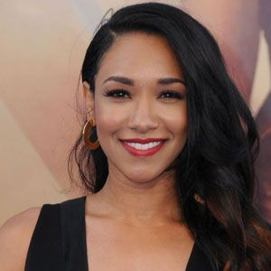

Cast
Grant Gustin
(Flash)

Candice Patton
(Iris)
Danielle Panabaker
(Nevasca)
Tom Cavanagh
(Nash Wells)
Carlos Valdes
(Cisco)
The Flash
2021
13+
Ficção Científica

O investigador forense Barry Allen (Grant Gustin) sofre um acidente em seu laboratório: ele leva um banho de produtos químicos e, em seguida, é atingido por um raio. A partir disso, ele se torna capaz de canalizar os poderes do "Campo de Velocidade" e de se locomover com uma rapidez sobre-humana. De máscara e uniforme vermelhos, Barry assume a identidade do super-herói Flash e começa a usar suas habilidades para patrulhar Central City, contando com a ajuda dos cientistas da S.T.A.R. Labs. Ao mesmo tempo que detém vilões, ele procura descobrir quem está por trás do assassino de sua mãe.